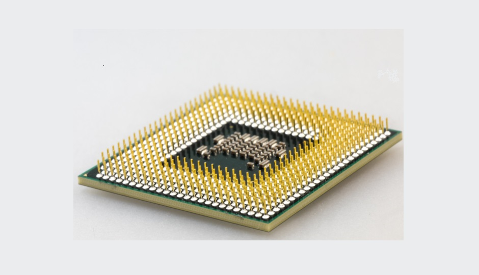

Projects
Here is a complete list of both hardware and software projects I have done.
Some projects are in-progress and have not been completed yet (both school and personal).
Pet Door
ECE 445 - Senior Design Project Laboratory
Engineered, designed, and constructed an automated pet door which detects motion and opens/closes remotely through a mobile app controlling the door.
Stock Trader
ECE 365 - Data Science and Engineering
Implemented a stock trader that trains classifiers with the stock's history and acts accordingly based on probability.
Tetris on FPGA
ECE 385 - Digital Systems Laboratory
Implemented Tetris with fully funcional game actions entirely run on an FPGA using SystemVerilog and on-system RAM.
16-bit Processor
ECE 385 - Digital Systems Laboratory
Developed a 16-bit CPU complete with functional instruction cycles, register file, memory access, and ISA support.
Convolutional Neural Network
ECE 408 - Applied Parallel Programming
Programmed a feed-forward neural network utilizing parallization techniques such as shared memory, tiling, matrix unrolling, and input channel reduction.
Maze Solver
CS 225 - Data Strucutres
Coded a program which finds a path through a maze utilizing BFS.
Linear Voltage Regulator
ECE 343 - Electronic Circuits Labratory
Designed, simulated, and validated a linear voltage regulator converting AC to DC.
Linux-Based Operating System
 ECE 391 - Computer Systems Engineering
ECE 391 - Computer Systems Engineering
Developed a fully funcional Linux-based operating system using x86 assembly and C.
Silicon Wafer
ECE 444 - IC Device Theory and Fabrication
Fabricated a 4 inch silicon wafer containing semiconductor devices utilizing clean-room equipment.
Signal Demodulator
ECE 210 - Analog Signal Processing
Superheteodyne radio reciever using amplifiers, filters, and envelope detectors to demodulate a carrier signal into audio
Vending Machine Simulator
ECE 120 - Introduction to Computing
Simulates coin-detection system of a vending machine using digital components such as flip-flops and logic gates. Designed and simulated using Altera Quartus II.
Stack Calculator
ECE 220 - Computer Systems and Programming
Developed in LC-3 (16-bit assembly language) a mathematical calculator that does basic math. Calculator interprets user input through postfix expression and manipulates memory and regisiter values.
Apple Watch App
Personal - Summer 2022
Developed an app which helps users keep track of personal workouts. Created with XCode and Swift.
Malicous Website Detector
Personal - Winter 2021
Probabilistic detection of whether a website is "harmful" or not using the bloom filter data structure.
Gibberish Generator
Personal - Winter 2021
Random generation of gibberish from a text file utilizing Marchov matricies and chains.
Sudoku Solver
Personal - Spring 2022
Solves Sudoku puzzles after giving the program the initial board (As an avid Sudoku player, sometimes you come across a puzzle that is too difficult to solve. This will help me get the solution easily).
Coffee Tempearature Sensor
 ECE 110 - Introduction to Electronics
ECE 110 - Introduction to Electronics
Designed and built circuit which could sense the temperature of a coffee mug and detect if it was too hot or not. Thermistors were used to detect heat and comparator was used to determine heat.
Light-Seeking Car
ECE 110 - Introduction to Electronics
Constructed a miniature car which drove from darker areas to lighter areas. Car was built using photodetectors for light detection and MOSFETs for controlling motors.
LED Cube
Personal - Summer 2021
Soldered, built, and programmed a 4x4 LED cube using blue LED lights, copper wire, and an Arduino Uno.
Personal Website
Personal - Winter 2021
Coded personal website using HTML, CSS, and JavaScript. (Self-taught)
Personal Computer
Personal - Spring 2015
Built high performing gaming computer. This was where my interest in electronics began.